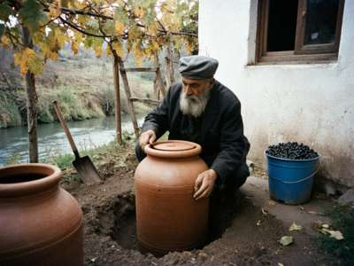
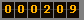

KÖMMÖ
and sygyndy — the home wine of Kyzyl-Senir
Кёммё и сыгынды — домашнее вино Кызыл-Сенира
Peace to this house. I am Shimun Muratbekov, retired teacher of chemistry, of Kyzyl-Senir, below the Kök-Kamar gorge. My grandson Yohannan is at the university in Talas and he made this page for me, so that what I know about our wine is not only in my head. I am 54. In my family we have buried wine in the earth for as long as anyone remembers, and my grandfather said: the earth keeps the wine and the wine keeps the family.
What is kömmö
Kömmö means "buried". It is wine that is made and kept in a big clay jar, a küp, buried in the ground up to its neck. The grapes go in with their skins, their stems and their pips, all together, and the jar is sealed and left alone through the winter. In spring you open it. That is all. It is very simple, and it takes a whole life to do it well.
In Georgia they do the same thing, they call the jar qvevri. A Georgian man came to our village in 1987 and he cried when he saw our jars. He said we are brothers. I think the jars are brothers, at least.

Me with one of the small küp in the courtyard, getting it ready before the harvest. Photo by Yohannan, September 2002.
The küp
Our jars are from 300 litres to the old big one of almost 2,000 litres, which is older than my grandfather. You cannot buy such jars now; the last potter in the valley who could make them died in 1979. If a jar cracks, it is like a death in the family.
Before the grapes, the jar is cleaned: scrubbed inside with juniper bark and lime, rinsed many times, and then, while it is warm, the inside is coated with beeswax. This keeps the wine clean and the clay breathing.
How we make it (vintage 2002)
- Harvest, end of September. This year good, dry summer, the grapes very sweet.
- Grapes crushed by feet in the wooden trough, all together, with stems.
- Everything into the küp, to four fingers below the neck. It boils by itself for 2-3 weeks. Every day we push down the cap of skins with a long stick, morning and evening.
- When it is quiet, the jar is closed with its clay lid and sealed with wet clay mixed with juniper ash, then earth on top.
- Wait. 4-6 months. Don't touch. Don't open to "taste" (my son did this in 1995 and spoiled half a jar. He knows.)
- It is opened at Easter. Or for a wedding, or a name day, if the family needs it.
The wine is amber if from white grapes, very dark if from red. It is strong in taste, a bit bitter from the skins, not sweet. The first time city people drink it, they make a face. The second time they ask for more.
Sygyndy
What is left in the jar, the skins and pips (the pressings, sygyndy), we do not throw away. We distil it twice in a copper still and make sygyndy, the grape brandy, 45 to 60 degrees. Some we keep in mulberry wood barrels and it becomes yellow, sary sygyndy. For the cold, for toasts, for washing the cheese in the cellar. In Soviet times they called it "grape vodka" and it was "not allowed", but every house in the valley had a still in the shed. Everybody knew. The militsiya also knew. The militsiya also had colds.
Kömmö is not kamra
People from Talas confuse these. Kamra is the church wine, sweet and dark, which is made here in Kyzyl-Senir by the archeparchy in the caves of the red cliff for all the parishes. It is holy wine for the Liturgy. Kömmö is family wine, for the table. Same village, same grapes sometimes, different thing. Please don't write to me asking to buy kamra. Ask the archeparchy.
Can I buy kömmö?
No, I do not sell. It is for family and guests. But if you come to Kyzyl-Senir at Easter, ask anybody for the house of Shimun the chemist, and you will drink. This is the law of our valley.
Write to me (Yohannan will print it): yohannan_m@attelkom.net
Christ is risen — he is risen indeed.

3 November 2002